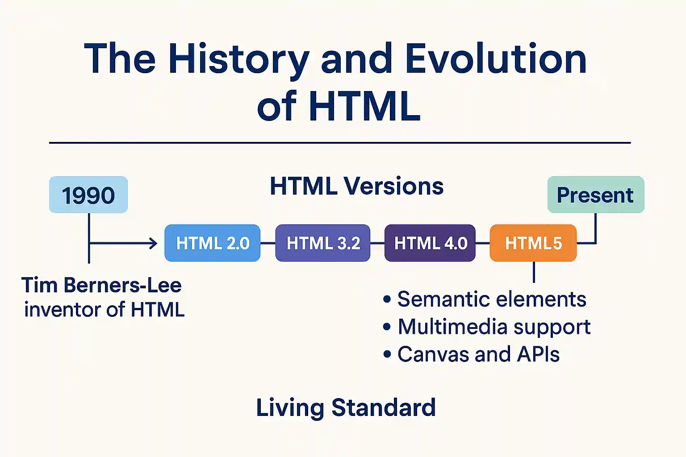
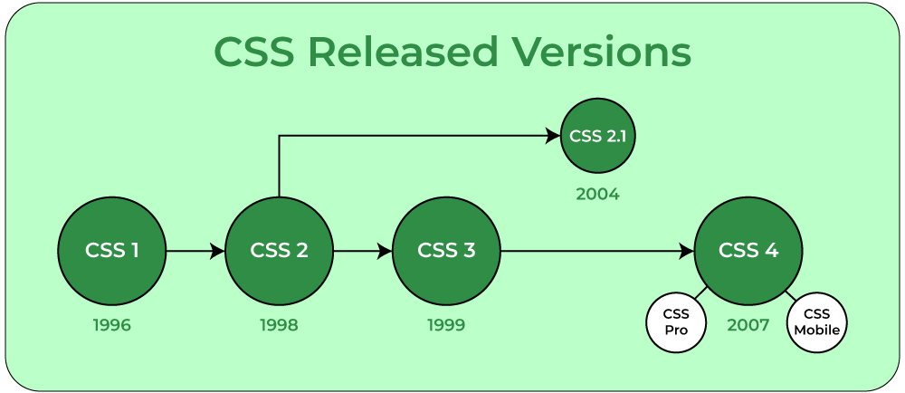
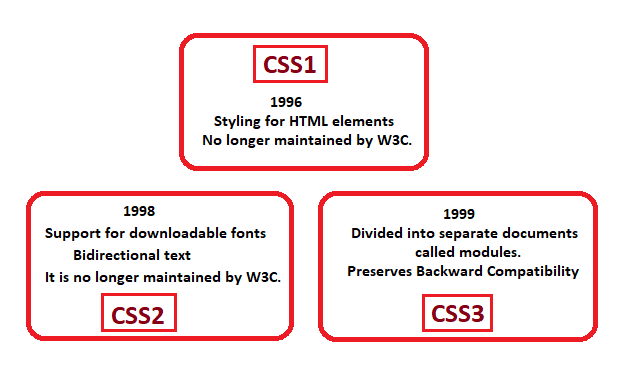

Evolution of HTML from HTML2.0 to HTML5
HTML 2.0 (Released November 1995 by IETF): This was the initial formal specification that standardized HTML as the web evolved. It expanded upon previous informal versions by incorporating fundamental structural elements. Significant additions include <forms>, <tables>, <images>, and <hyperlinks>. No significant tags were deprecated, as this version was foundational. It outlined essential functions like text formatting and lists that all browsers maintained until the introduction of later versions. Browser support: Universal in current browsers such as Chrome, Firefox, and Edge.
HTML 3.2 (Released January 1997 by W3C): Created solely by W3C after the closure of IETF's group, this version aimed for backward compatibility while introducing features for improved design. New features include enhanced tables with attributes for borders and alignment, applets (for Java), text wrapping around images, superscripts/subscripts, and math elements (although support was limited). Some experimental tags from drafts were deprecated, such as <multicol>, <spacer>, <nobr>. This release focused on multimedia integration. Browser support: Fully functional in all modern browsers, although applets are now outdated.
HTML 4.01 (Released December 1999 by W3C): This was a minor revision of HTML 4.0 (1997), correcting mistakes and clarifying guidelines. It moved towards separating content from presentation (promoting CSS). New features included improved accessibility (e.g. for abbreviations), scripting support, frames, and enhanced forms. It deprecated presentational tags like <font>, <basefont>, <center>, <u>, <s>, <strike>, <dir>, <menu>, <isindex>, <applet> (which should be replaced with CSS). It also introduced for multimedia purposes. This version was the standard in the early 2000s. Browser support: Widely accepted, though the use of frames is not recommended.
HTML 5.1 (Released November 2016 by W3C): This is an update to HTML5 (2014) that concentrates on modern web applications. It introduced semantic elements for improved structure and SEO (Search Engine Optimization). New multimedia tags include <audio>, <source>, <embed>, <track> and <video>. <canvas> and <svg> for graphics. Forms received enhancements with input types (email, date). Deprecated tags include <acronym>, <applet>, <basefont>, <big>, <blink>, <marquee>, <center>, <dir>, <font>, <frame>, <frameset>, <noframes>, <isindex>, <listing>, <xmp>, <plaintext>, <strike>, <s>, <tt>, and many more (which should be replaced with CSS or instead); has been removed. The focus was on mobile/responsive design. Browser support: Excellent across all major browsers.

| Version | Release Date | Key Tag Features | Deprecated Features | Purpose of Changes | Browser Support |
|---|---|---|---|---|---|
| HTML 2.0 | November 1995 | Forms, Tables, Images, Hyperlinks | None | standardize basics for growing web | Universal in modern browsers |
| HTML 3.2 | January 1997 | Enhanced Tables, Applets, Text Wrapping, Superscripts/Subscripts | <applet> | Improve design and multimedia support | Fully functional in modern browsers |
| HTML 4.01 | December 1999 | Accessibility Improvements, Scripting Support, Frames, Enhanced Forms | <font>, <center>, <big>, <strike> | Accessibility and Css integration | Widely accepted, frames not recommended |
| HTML 5.1 | November 2016 | Semantic Elements, Multimedia Tags, Enhanced Forms, Mobile/Responsive Design | <acronym>, <applet>, <basefont>, <big>, <center>, <font>, <strike> | Modern web applications and mobile focus | Excellent across all major browsers |
As illustrated in the table above, HTML has evolved dramatically to meet the web's growing demands for interactivity, accessibility, and multimedia. From HTML 2.0's foundational standardization of core tags like <forms> and <images> in 1995, to HTML 3.2's enhancements for design and applets in 1997 (while dropping unsupported experiments like math formulas), the language progressed toward better structure. HTML 4.01 in 1999 emphasized CSS separation by deprecating presentational tags such as <font> and <center>, adding features for scripting and global support. By HTML 5.1 in 2016, semantic elements (<header>, <nav>) and media tags (<video>, <audio>) were introduced, deprecating relics like <applet>, <big>, and <acronym> to focus on mobile apps and clean code, all with excellent modern browser compatibility. This progression reflects a shift from simple documents to dynamic experiences. © EJIWUNMI SHEHU LAWAL 2025
The Evolution of CSS
CSS1 (Released December 1996 by W3C): The first official specification aimed at separating style from content. It included fundamental features such as font properties (font-family, size, weight), text styling (color, alignment, decoration), margins, padding, borders, and basic selectors (tags, classes). Advanced layouts were not included. Its focus was on visual styling for HTML. Browser support: Core features available in all browsers.
CSS2 (Released May 1998 by W3C): Built upon CSS1 by introducing advanced layout capabilities. New features included positioning (absolute, relative, fixed), z-index for layering, media types (@media for print/screen), aural styles (for speech), paged media, and improved selectors (pseudo-classes like :hover). Refinements to the box model were also included. Browser support: Most features became standard, though some aural features were deprecated.
CSS2.1 (Recommended in 2011 by W3C): A revision of CSS2 aimed at correcting errors, eliminating poorly supported features (e.g., certain aural styles, system colors), and clarifying rules. No significant new features were added, but interoperability was enhanced. It effectively served as the standard for many years. Browser support: Fully implemented.
CSS3 (Ongoing since the 2000s, Modular by W3C): Rather than a single version, it encompasses modules that allow for incremental development. Key additions/modules include advanced selectors (:nth-child), backgrounds/borders (gradients, shadows, rounded corners), transitions/animations (@keyframes), flexbox/grid layouts, multi-column layouts, and responsive design (@media queries). It deprecated some CSS2 features, including specific pseudo-element syntax. Browser support: Varies by module, but core elements are supported in modern browsers.
| Version | Release Date | Key New Features | Deprecated Features | Purpose of Changes | Browser Support |
|---|---|---|---|---|---|
| CSS1 | December 1996 | Font properties, Text styling, Margins, Padding, Borders, Basic selectors | None | Separate style from content | Core features in all browsers |
| CSS2 | May 1998 | Positioning, Z-index, Media types, Aural styles, Paged media, Improved selectors | Certain aural features | Advanced layout and media support | Most features standard, some aural deprecated |
| CSS2.1 | 2011 (Recommended) | Error corrections, Removed poorly supported features, Clarified rules | Certain aural styles, System colors | Improve interoperability and clarity | Fully implemented in modern browsers |
| CSS3 | Ongoing since 2000s (Modular) | Advanced selectors, Backgrounds/Borders, Transitions/Animations, Flexbox/Grid layouts, Multi-column layouts, Responsive design | Certain pseudo-element syntax from CSS2 | Incremental development for modern web design | Varies by module; core elements widely supported |
As illustrated in the table above, CSS has transformed from a basic styling tool to a modular powerhouse for modern web design. CSS1 in 1996 introduced fundamental properties like fonts, colors, and backgrounds to decouple presentation from HTML structure, with no major deprecations as it laid the groundwork. CSS2 in 1998 expanded with positioning, pseudo-classes (:hover), and media queries, though some features like aural styles were later refined or removed for practicality. CSS2.1 in 2011 focused on stability by fixing inconsistencies and dropping poorly supported elements, ensuring broad browser adoption. CSS3, evolving modularly since the 2000s, added advanced capabilities such as flexbox, grid layouts, transitions, and responsive designs, deprecating outdated syntax while prioritizing flexibility, all with strong support in contemporary browsers. This evolution underscores CSS's role in enabling consistent, interactive, and device-agnostic web experiences. © EJIWUNMI SHEHU LAWAL 2025
References
- IETF (1995) HTML 2.0
- MDN Web Docs (2025) CSS: Cascading Style Sheets
- MDN Web Docs (2025) HTML: HyperText Markup Language
- W3C (1996) Cascading Style Sheets, level 1
- W3C (1997) HTML 3.2 Reference Specification
- W3C (1998) Cascading Style Sheets, level 2 CSS2 Specification
- W3C (1999) HTML 4.01 Specification
- W3C (2011) Cascading Style Sheets Level 2 Revision 1 (CSS 2.1) Specification
- W3C (2016) HTML 5.1
- W3C (2018) CSS Snapshot 2018
- Wikipedia (2025) CSS
- Wikipedia (2025) History of HTML